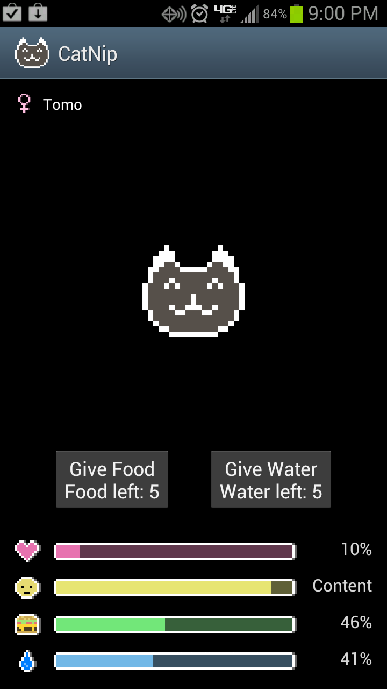

Cat-apps
This project is maintained by Drew Burden, Daniel Thomas, James Garner, and Brandon Brethen
Cat-Apps! :3
Prototype 2
Prototype 2 of Cat-Apps has extended the functionality of the application by a considerable amount. Prototype 1 was very simplistic, consisting of a figurehead cat ImageButton and a Hearts meter that was incremented upon the pressing of the cat's ImageButton. The figurehead cat has stayed the same for this prototype, but there have been many additions to the application.
The cat's attributes have been extended to include Hunger, Thirst, and Mood. These are all represented at the bottom using meters as before with the Hearts meter, which is still present. These meters have all been configured to decrement naturally over time, and increment when certain conditions are met. The rate at which they change is dependent on the difficulty setting, which is new as well.
The cat's ImageButton has been changed to an ImageView. Not only has the element type been changed but the functionality has been updated as well. Instead of clicking on the button, as was the case in Prototype 1, the newest updates allow the user to "pet," the cat by sliding their finger across the screen where the ImageView is shown.
The cat's properties such as name and sex have been updated as well to allow for the user to define the name of the cat themselves and to allow the setting of the sex of the cat. In the settings menu, it is now possible to clear the cat's data as well, which would then prompt the user to enter a new name for the cat as well as select it's gender.
Measurements
Installs, Ratings, Price, and ".apk size" were found on Google Play, while "Total size on device" was measured by us using the Android operating system.